Reimagining a legacy brand for the modern web.
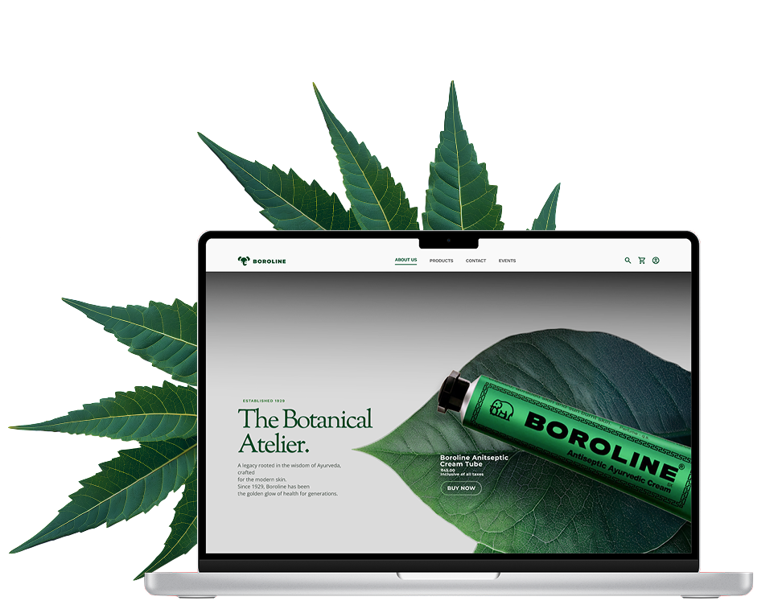
Where is the friction?
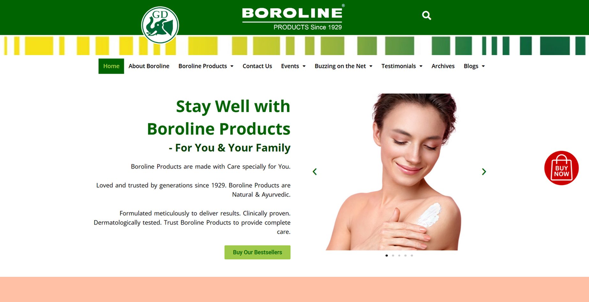
Legacy trust wasn't reflected in the digital experience.
The interface felt visually outdated and lacked the clarity and polish users expect from modern e-commerce platforms.
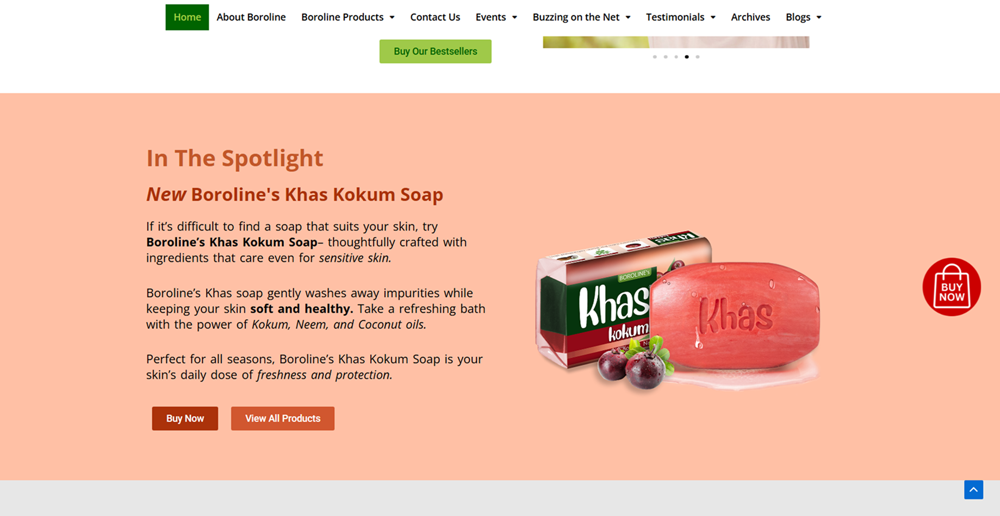
Content-heavy layouts buried important information.
Long paragraphs and weak visual hierarchy made it difficult for users to quickly understand product benefits or take action.
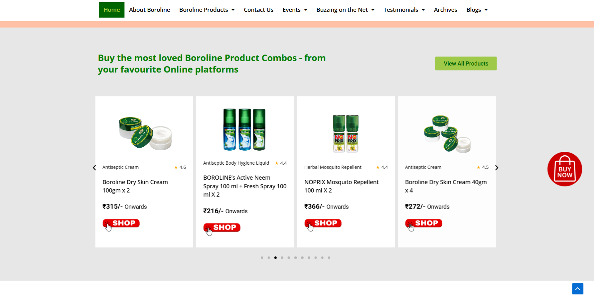
The purchase journey was fragmented across multiple platforms.
Browsing happened on Boroline's website, but purchasing redirected users elsewhere, interrupting the shopping flow.
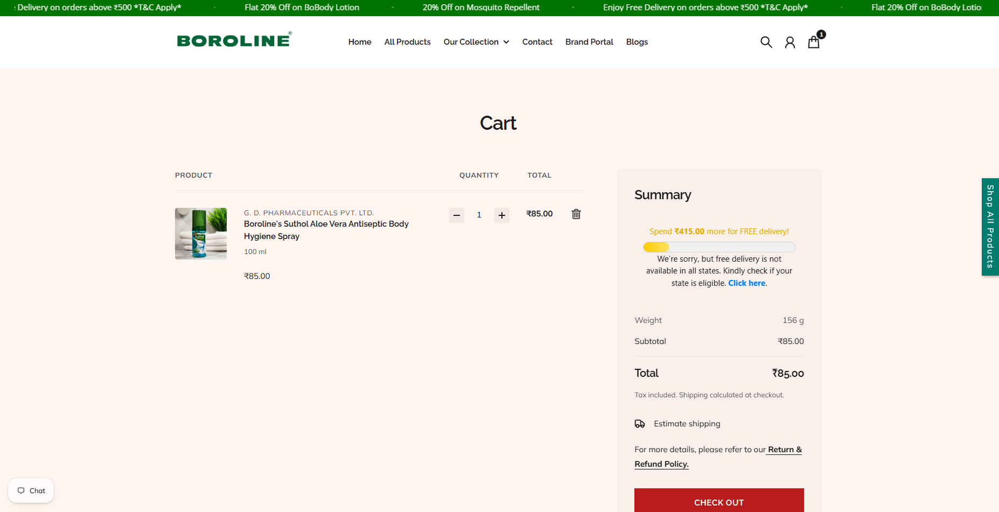
Users lacked a seamless end-to-end buying experience.
The absence of integrated shopping functionality introduced additional steps and increased drop-off opportunities.
How does this impact the user?
- Users feel that the outdated digital experience doesn't match the trust associated with the Boroline brand.
- They experience friction during the buying journey as purchasing requires switching between multiple websites and platforms.
- The website prioritizes products over use cases, making it harder for new users to discover how Boroline fits into their daily lives.
Why should the business care?
Final Re-design
After identifying the friction points, I started to ideate and create a prototype for the re-design of the website.
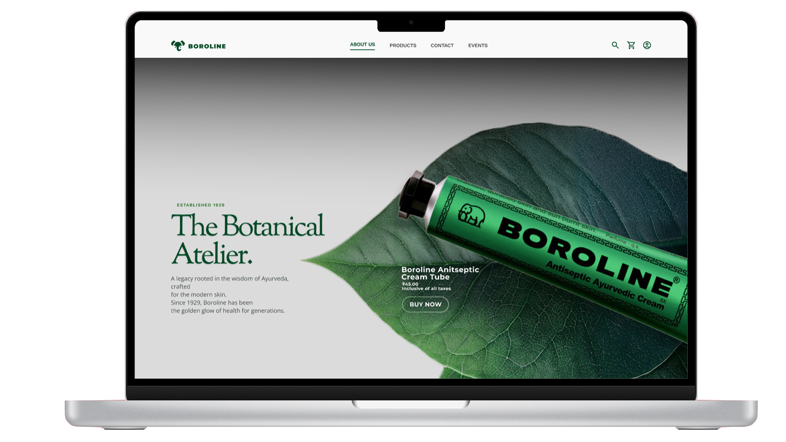
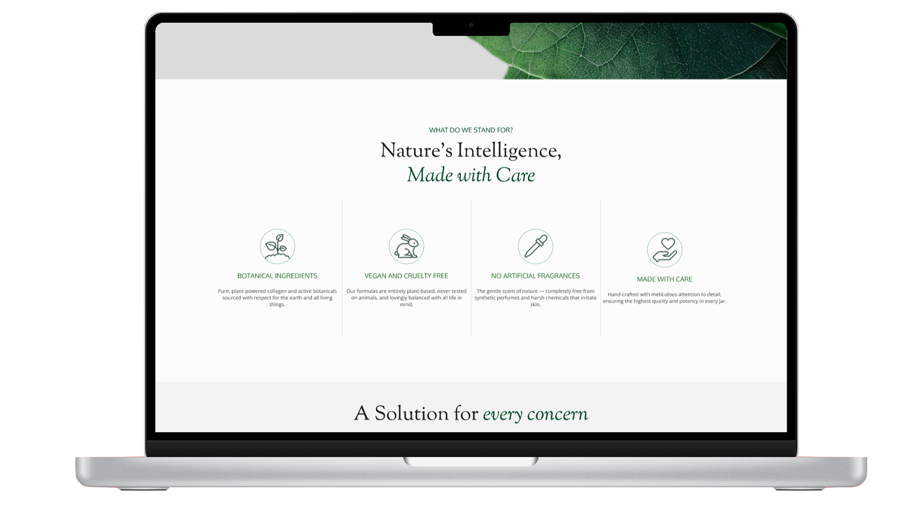
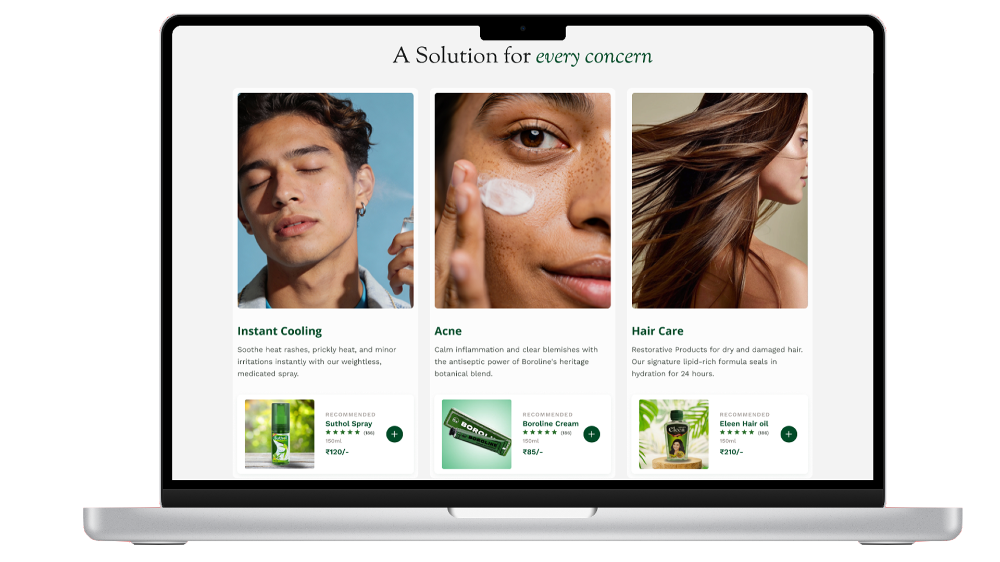
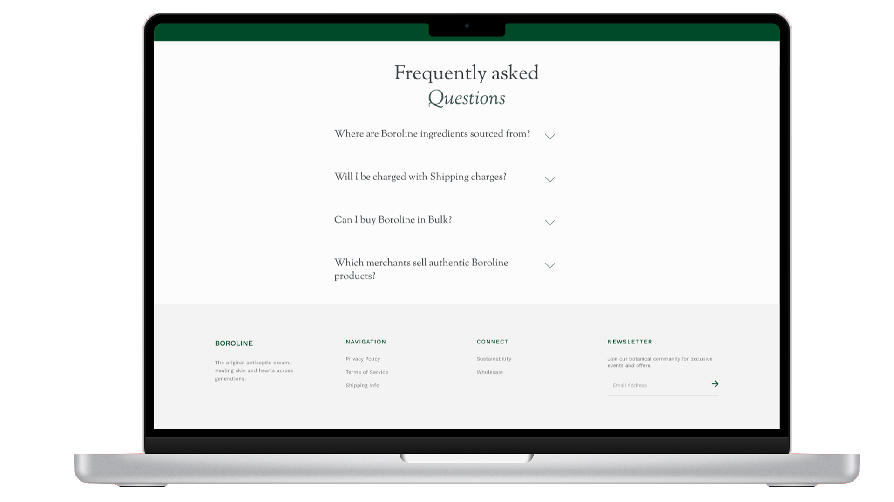
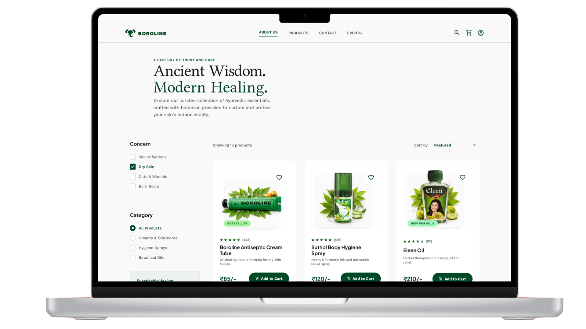
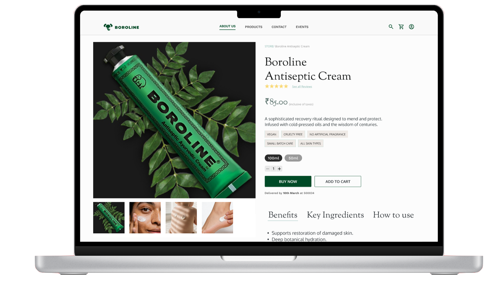
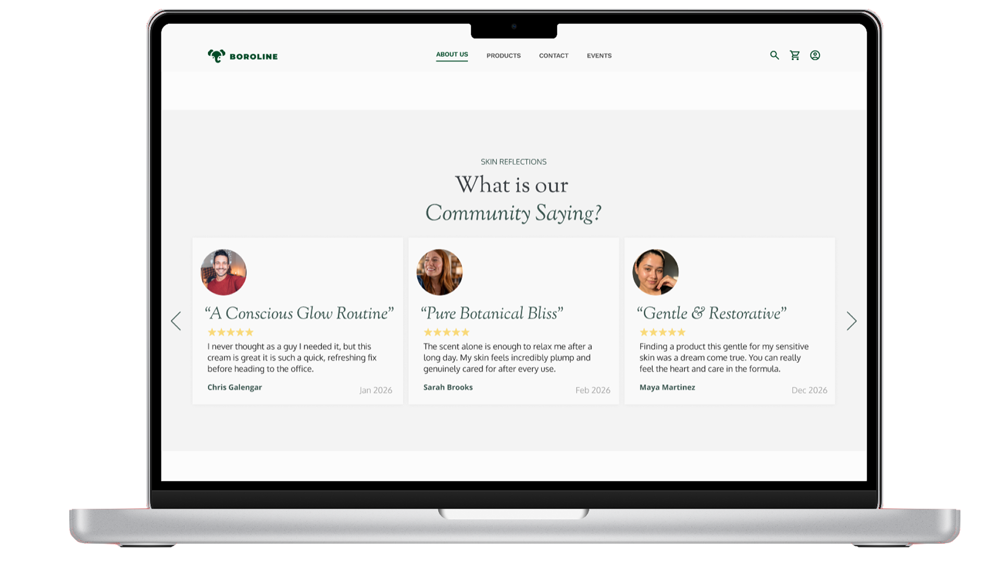
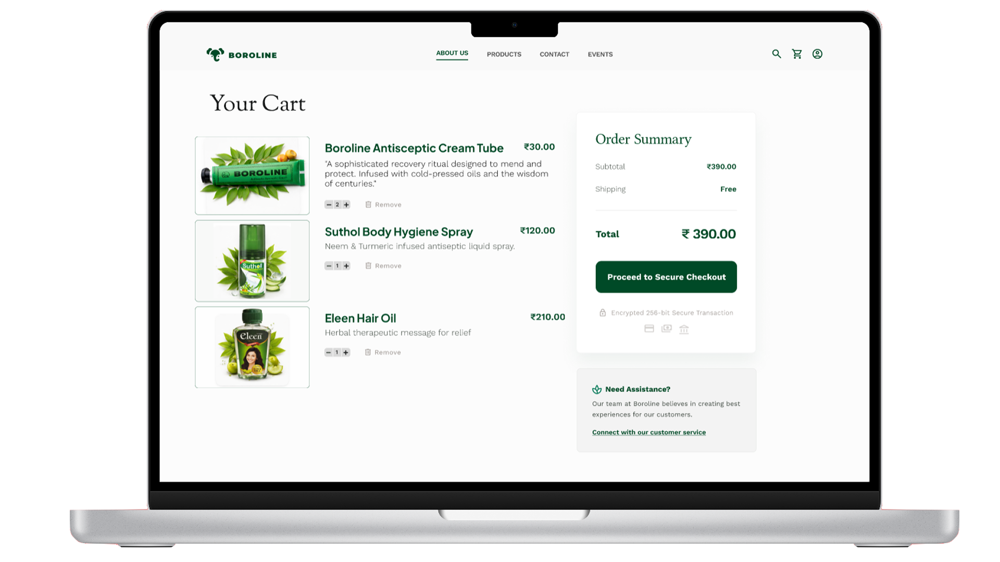
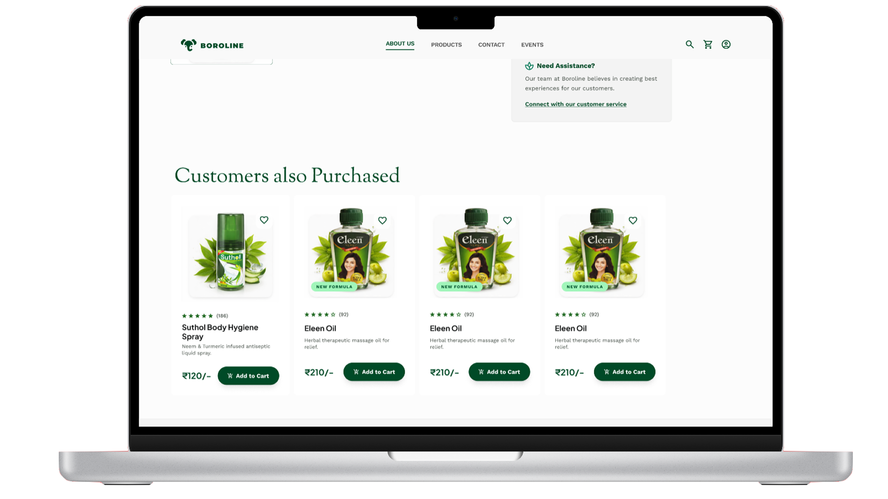
Impact
- A modernized experience helps align Boroline's digital presence with the trust users already have in the brand.
- A unified shopping journey reduces friction and improves purchase completion.
- Highlighting multiple use cases increases product discovery and engagement.
Reflections
This project showed me that redesigning a legacy brand is not about replacing its identity, but translating its values for a modern audience.
The challenge was finding the balance between preserving familiarity and creating an experience that meets contemporary user expectations without losing what makes the brand recognizable and trusted.
Next Steps
As this project was developed as a desktop-focused capstone project, future iterations would prioritize adapting the experience for mobile devices and smaller screens to ensure accessibility and consistency across platforms.
Further exploration would also focus on responsive layouts, touch-friendly interactions, and optimizing browsing and checkout experiences for mobile users, where a significant portion of e-commerce traffic originates.